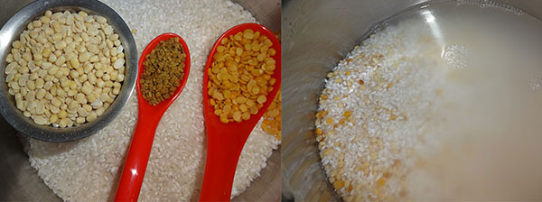
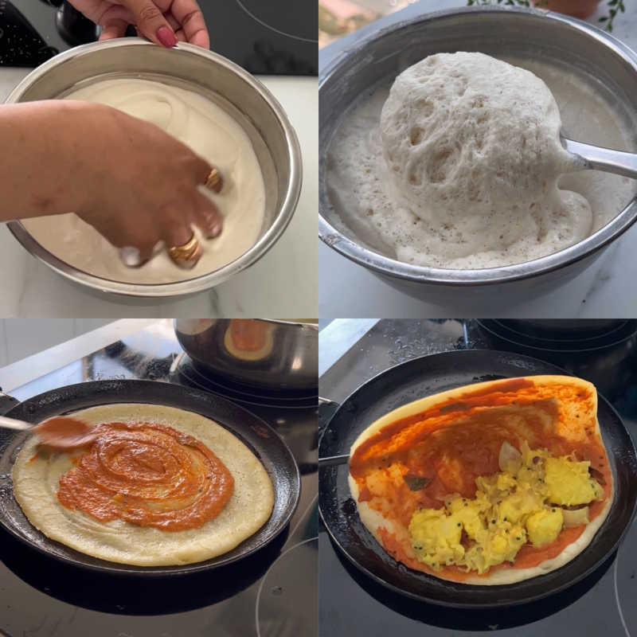
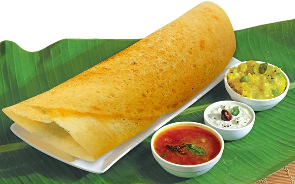

Gallery

soaked rice and dal

Making masala-dosa

Mysore masala-dosa
Masala dosa is a dish of South India.It is a type of dosa originating in the town of Udupi, Karnataka. While there is variation in the recipe from town to town, the basic recipe typically starts with a fermented batter of parboiled rice, poha, and various legumes (black gram, pigeon peas, chickpeas), and incorporates various spices for flavour, such as fenugreek and dry red chilli. Traditionally served with potato curry, chutneys, and sambar, it is a common breakfast item in South India, though it can also be found in many other parts of the country and overseas. One common variant is the Paper masala dosa, which is made with a thinner batter, resulting in a crisper, almost paper-thin final product.
The dosa originated in South India, but its precise geographical origins are unknown. According to food historian K. T. Achaya, references in the Sangam literature suggest that dosa was already in use in the ancient Tamil country around the 1st century CE. However, according to historian P. Thankappan Nair, dosa originated in the town of Udupi in present-day Karnataka. Achaya states that the earliest written mention of dosa appears in the 8th-century literature of present-day Tamil Nadu, while the earliest mention of dosa in Kannada literature appears a century later.
In popular tradition, the origin of the dosa is linked to Udupi, probably because of the dish's association with Udupi restaurants. The Tamil dosa is traditionally softer and thicker; the thinner and crispier version of dosa was first made in present-day Karnataka.A recipe for dosa can be found in Manasollasa, a 12th-century Sanskrit encyclopedia compiled by Someshvara III, who ruled from present-day Karnataka.
Dosas can be stuffed with fillings of vegetables and sauces to make a quick meal. They are typically served with a vegetarian side dish which varies according to regional and personal preferences. Common side items are: